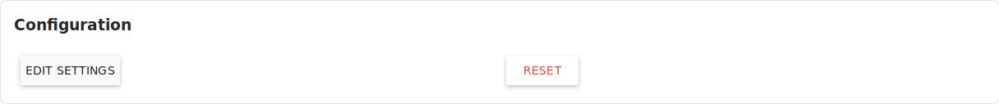

eBlocker Help > Knowledge Base > eBlocker Menu
eBlocker Base ✓ / eBlocker Pro ✓ / eBlocker Family ✓
With the eBlocker Mobile function, you can protect your mobile devices, such as mobile phones, tablets and notebooks while on the road with your own eBlocker. To make this possible, you have to make the eBlocker accessible with a few settings on the router and the mobile device.
You must get an IPv4 connection from your Internet provider. eBlocker Mobile does not work with an IPv6 connection.
If you want to use the eBlocker Mobile function, your eBlocker must be connected directly to your router.
Assign a fixed IP address to the eBlocker in your network.
If necessary, refer to your router manual for information on how to assign a fixed IP address to a device in your network.
To use eBlocker Mobile, the eBlocker DNS Firewall must be enabled.
First you have to setup a port forwarding from your router to the eBlocker for port 1194.
Here you will find instructions for port forwarding for various routers.

Activate the switch or click the Change Settings button on the page to activate the setup wizard. The wizard will help you set up eBlocker Mobile.
The eBlocker Mobile Wizard will ask some questions during setup.
You can specify if you have a fixed IPv4 address assigned to you by your Internet provider, if you use a Dynamic DNS provider (DynDNS), or if you want to use the free eBlocker Dynamic DNS Service.
Some routers allow you to set up port forwarding automatically. The eBlocker Mobile Wizard supports this feature, but to be on the safe side, you can set up port forwarding for port 1194 from the router to eBlocker yourself.
Finally you can let the wizard test the connection and start the eBlocker Mobile Server.

To be able to use the eBlocker Mobile function on mobile devices, an OpenVPN App must be installed and the eBlocker OpenVPN configuration must be imported into this App.